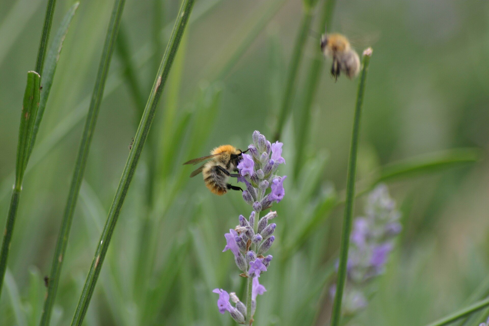
Bees and Flowers: A Pollination Adventure
A sunny story about pollen, nectar, and seeds

A sunny story about pollen, nectar, and seeds
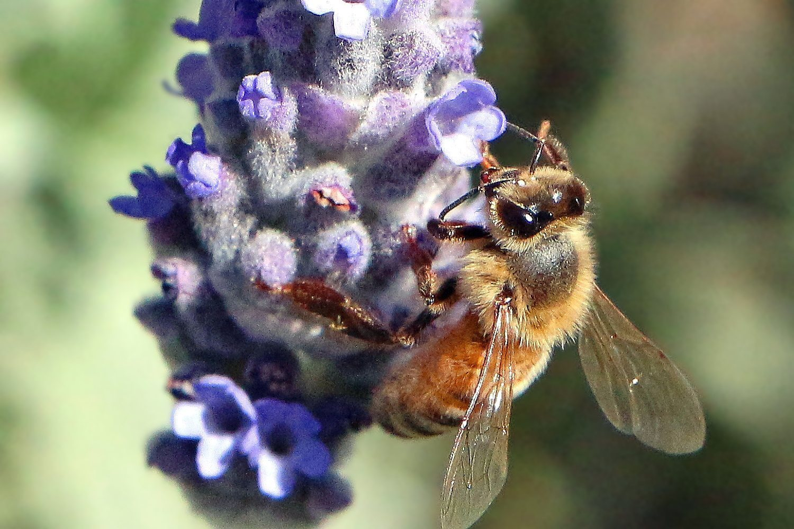
A flower is a busy place. Many plants use flowers to make seeds. Bright colors and sweet smells help bees find the blooms.
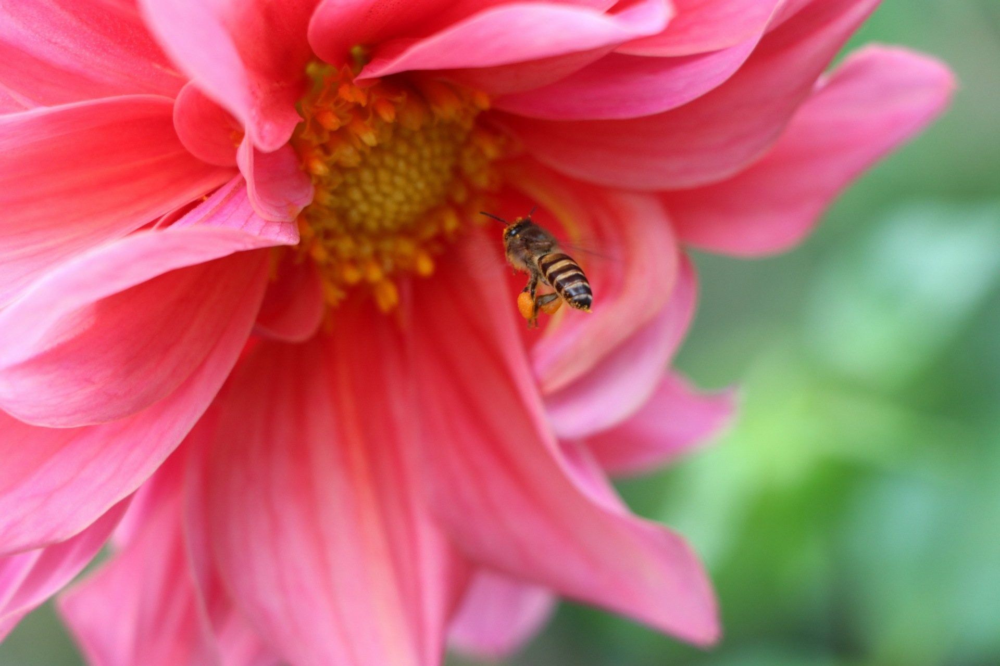
The bee dips into a flower for nectar. Nectar is sweet flower liquid. It gives the bee energy to fly, fly, fly.
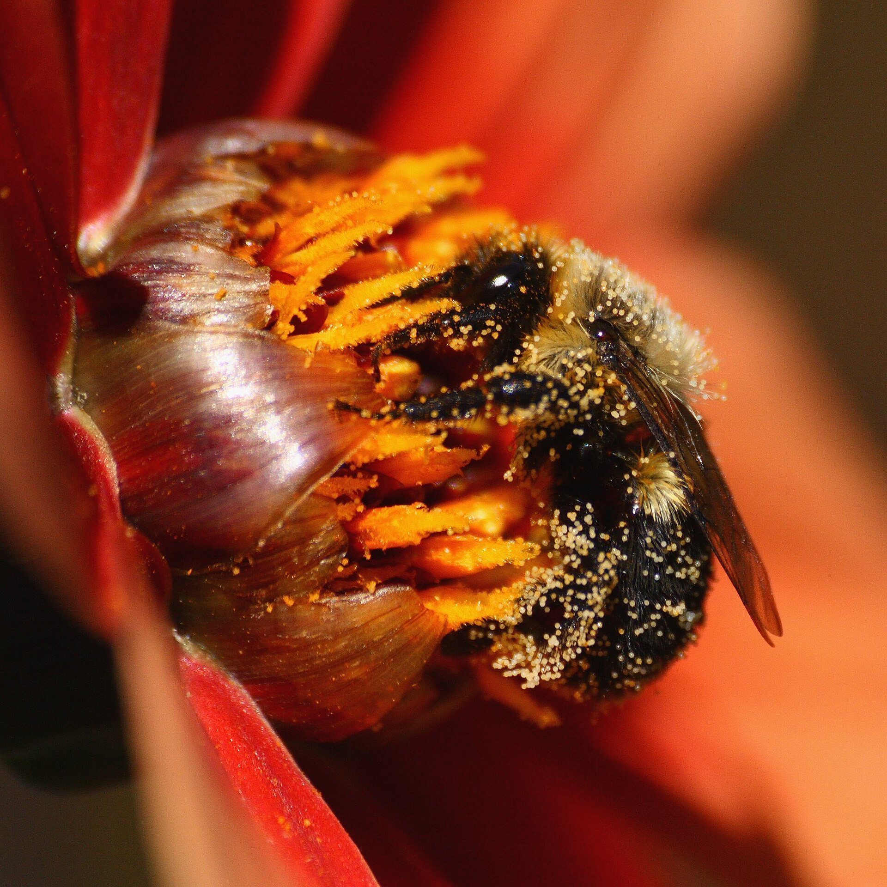
The flower also makes pollen. Pollen is a fine powder. When the bee climbs in, pollen can stick to its hairy body.
Some bees collect pollen to take home. They pack it onto special baskets on their back legs. That pollen helps feed young bees.
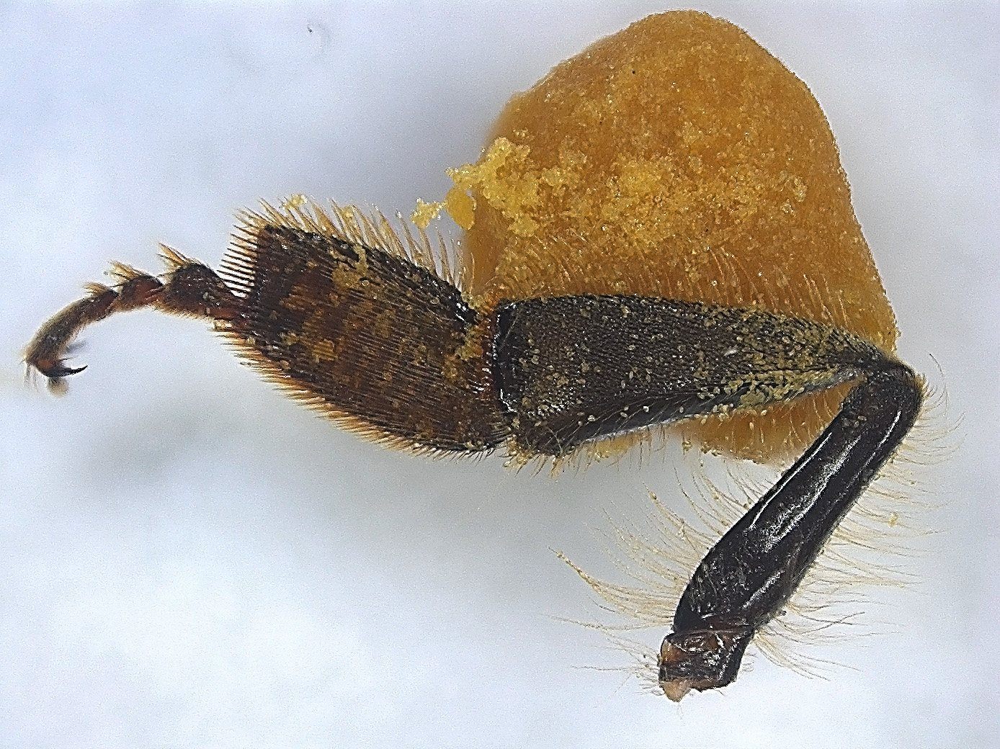
Now the bee visits another flower. Some pollen rubs off in the right place. This pollen move is called pollination.
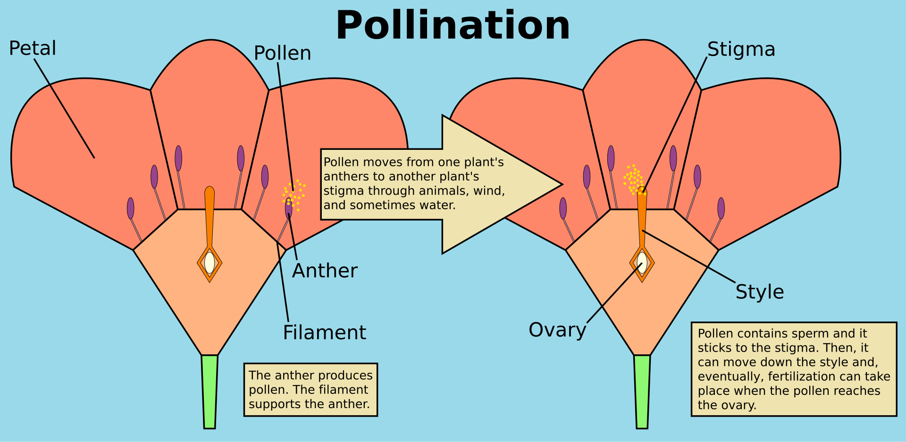
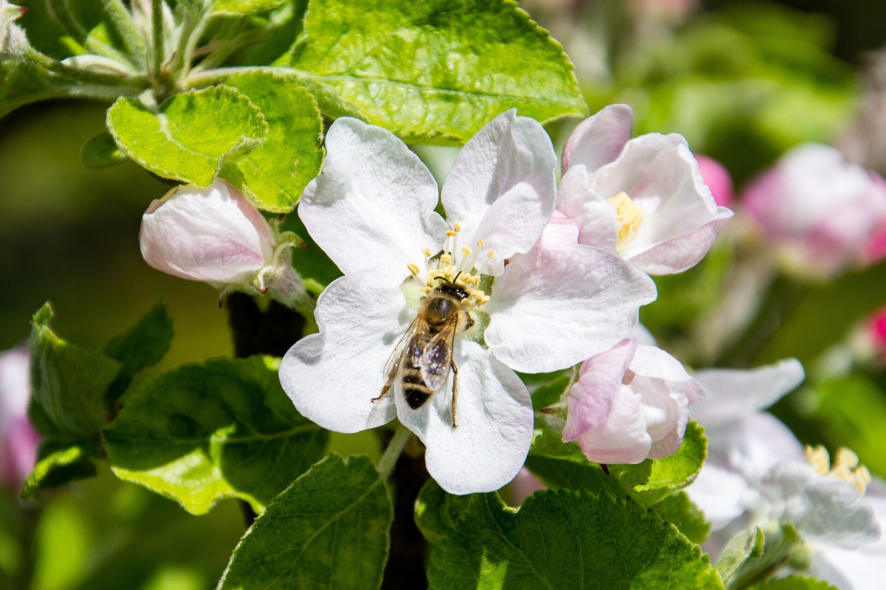
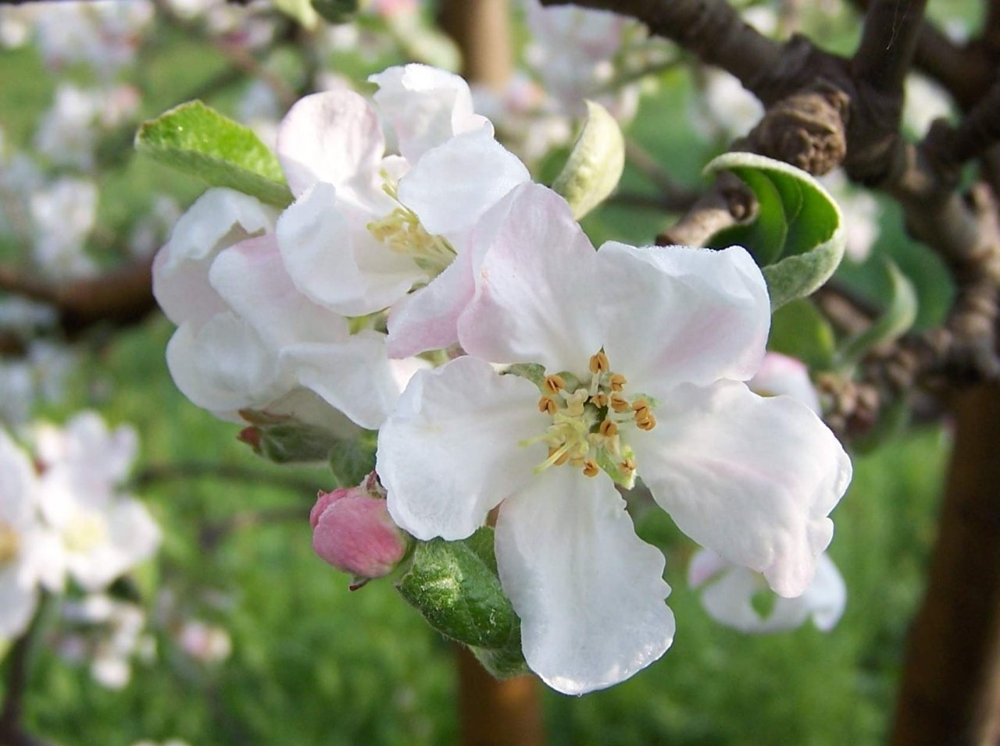
After pollen lands in the right spot, a flower may begin making seeds. In many flowering plants, seeds grow inside fruit.
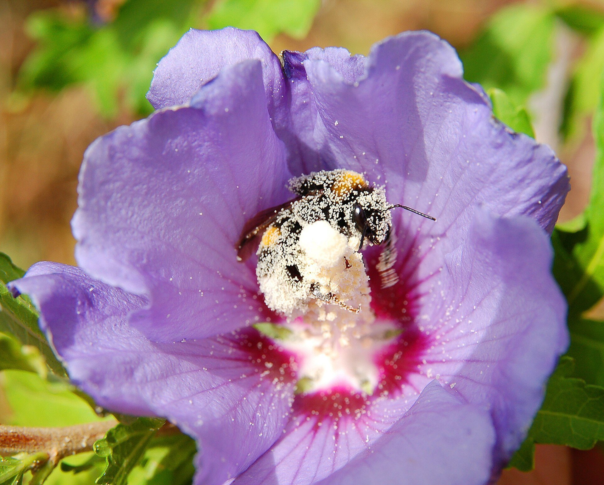
The bee is looking for food, not trying to help on purpose. Still, bees get food from flowers, and flowers get help making seeds.
Pollinators help many fruits and vegetables grow. Good pollination can help plants make full, healthy fruit.
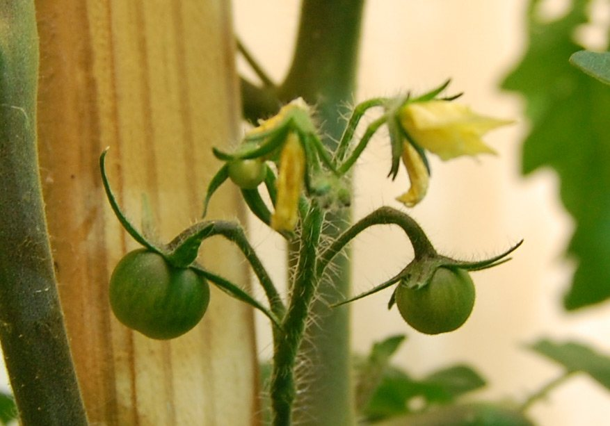
People can help bees and flowers too. Plant many kinds of flowers that bloom at different times, and use fewer pesticides when you can.
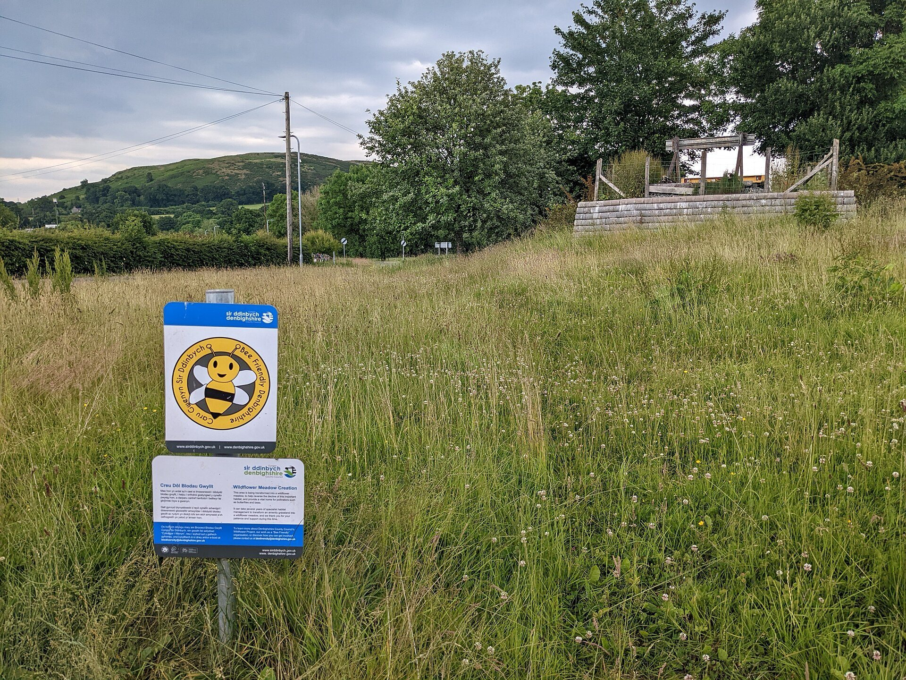